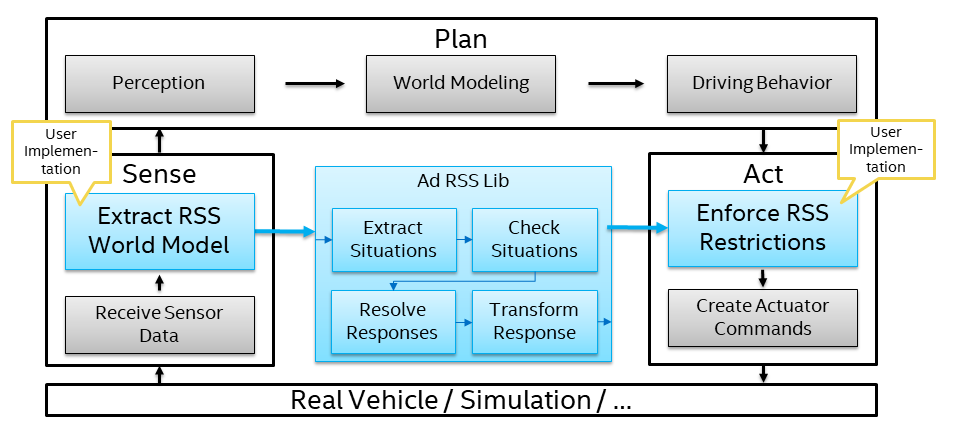

Overview
Introduction¶
The Responsibility-Sensitive Safety (RSS) model is designed to formalize and contextualize human judgment regarding all multi-agent driving situations and dilemmas. RSS formalizes terms like dangerous situations, proper response and notion of blame in a mathematical way. From planning and decision-making perspective, RSS ensures that the AD system will not issue a command that would lead to an accident.
RSS Summary¶
RSS as described here, can be summarized as follows:
-
RSS continuously monitors the current state of the environment, in order to determine if the ego vehicle is currently in a safe state. If the ego vehicle is not in a safe state, RSS will provide a response action that will bring the car back into a safe state. As a result, in case of an accident, the ego vehicle cannot be blamed responsible, as it was not causing the collision.
-
A state is regarded as safe, if the ego vehicle is not causing a collision with another object, under the worst case assumption that the ego vehicle will accelerate (depending on the situation this can be also a deceleration) at maximum possible speed during its response time. Hence, RSS does not take the output of the driving policy into account. However, as RSS uses worst case assumption on reaction time, acceleration etc., it is guaranteed that, no valid action of the driving policy can bring the vehicle into an unsafe state, if RSS regards the current situation as safe.
-
If the ego vehicle is in a dangerous situation, RSS will assure a proper reaction, that will bring the car back into a safe state. Therefore, it will impose proper restrictions for the longitudinal and lateral accelerations of the driving command, that is send to the ego vehicle. Note that this will assure that the vehicle reacts correctly, but the driving policy still has the chance to solve the dangerous situation on a more elaborate way, as long as the desired action is within the RSS limits. The reason is that RSS has only basic information about the environment, whereas the driving policy can use much more information, and is able to perform much more sophisticated path finding strategies.
-
RSS differentiates between longitudinal and lateral conflicts. A longitudinal conflict means that the distance between the ego vehicle and an object in front or in the back of the ego vehicle is smaller than the longitudinal safety distance. Similarly, a lateral conflict arises, if the distance to the left or right of the ego vehicle to another object is less than the required lateral safety margin. Depending on the type of conflict, RSS requires a different response.
-
In addition, RSS differentiates between normal (single- or multi-lane) roads, intersections and unstructured roads (e.g. parking areas). Depending on the type of road, the required response for a conflict is different.
-
Objects are classified into Vulnerable Road Users (e.g. pedestrians) and other (dynamic) traffic objects. The reason for this separation is that the first object group requires special safety considerations, as for example pedestrians may have unknown routes, compared to vehicles.
-
RSS is not about:
- How to get "good enough" sensor data. It is about the usage, which may impose some sensor requirements.
- Avoiding collisions, if other traffic participants show a completely erratic driving behavior. Instead, it is about ensuring that the ego vehicle cannot be blamed for the accident.
Purpose and Scope of this Library¶
The design of the library at hand is based on the academic paper "On a Formal Model of Safe and Scalable Self-driving Cars". The library provides a C++ implementation of RSS according to the aforementioned summary. The key component of this implementation is called "ad-rss-lib". This library receives (post-processed) sensor information and provides actuator command restrictions as output.
|  |
|---|
| ad-rss-lib (implemented in the library) and its interfaces to the outside world |
In summary, the ad-rss-lib receives an object list, with information about all objects in the surrounding environment of the ego vehicle. Then, the ad-rss-lib creates an object - ego vehicle pair, for each object. This pair is usually referred to as "Situation". For all situations, the aforementioned RSS checks are performed and a proper response is calculated. Finally, one overall response is computed by the ad-rss-lib, and the corresponding actuator command restrictions (i.e. lateral and longitudinal acceleration restrictions) are sent out.
Note
The conversion from sensor data to the object list required by the ad-rss-lib, as well as the conversion of the actuator command restrictions to real driving commands, have to be implemented by the user of this library, as these parts heavily depend on the actual vehicle setup.
Note
The current scope of the provided implementation is:
- Standalone C++-library containing the implementation of the ad-rss-lib
- The ad-rss-lib covers multi-lane roads and intersections
- Code quality is assured by automated testing with test coverage of 100% on methods and 80% on branches as well as static code analysis
- The library is intended for the research community.